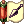
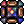

| Shared Skills
|
| Skill
|
Type
|
Properties
|
Description
|
 Shadow Hiding Shadow Hiding
|
Support
|
- Max Level: 1
- Target: Self
- SP Cost: 10
|
Hide yourself.
- This skill is the same as Thief's
 Hiding skill. Hiding skill.
|
 Right-hand Mastery Right-hand Mastery
|
Passive
|
|
Helps remove the damage reduction for dual wielding.
- Right hand damage is reduced to 70% when dual wielding.
- [Lv 1] : Deal 80% of your right hand damage.
- [Lv 2] : Deal 90% of your right hand damage.
- [Lv 3] : Deal 100% of your right hand damage.
- [Lv 4] : Deal 110% of your right hand damage.
- [Lv 5] : Deal 120% of your right hand damage.
|
 Left-hand Mastery Left-hand Mastery
|
Passive
|
|
Helps remove the damage reduction for dual wielding.
- Left hand damage is reduced to 50% when dual wielding.
- [Lv 1] : Deal 60% of your left hand damage.
- [Lv 2] : Deal 70% of your left hand damage.
- [Lv 3] : Deal 80% of your left hand damage.
- [Lv 4] : Deal 90% of your left hand damage.
- [Lv 5] : Deal 100% of your left hand damage.
|
 Kunai Explosion Kunai Explosion
|
Damage
|
- Max Level: 5
- Target: Ground
- SP Cost: 5:6:7:8:9
- Var. Cast Time: 1.0s:1.4s:1.8s:2.2s:2.6s
- Cast Delay: 1.0s
- Cool Down: 3.0s
- Range: 7:8:9:10:11
- Consumes 1
 Explosive Kunai Explosive Kunai
- Cast can not be interrupted
|
Throw an explosive Kunai and damage all enemies in the area.
- [Lv 1] : 7 Cells range, 5x5 Area of effect.
- [Lv 2] : 8 Cells range, 5x5 Area of effect.
- [Lv 3] : 9 Cells range, 5x5 Area of effect.
- [Lv 4] : 10 Cells range, 5x5 Area of effect.
- [Lv 5] : 11 Cells range, 5x5 Area of effect.
|
 Swirling Petal Swirling Petal
|
Damage
|
- Max Level: 5
- Target: Ground
- SP Cost: 24:28:32:36:40
- Var. Cast Time: 1.0s:1.2s:1.4s:1.6s:1.8s
- Cast Delay: 1.0s
- Cool Down: 3.0s
- Range: 9:10:11:12:13
- Required weapon type: Huuma Shuriken
- Cast can not be interrupted
|
Throw a shuriken and deal damage to all enemies in a 7x7 area.
- This skills damage is increased base on
 Throw Shuriken skill level, DEX, and AGI. Throw Shuriken skill level, DEX, and AGI.
- [Lv 1] : 150% ATK.
- [Lv 2] : 300% ATK.
- [Lv 3] : 450% ATK.
- [Lv 4] : 600% ATK.
- [Lv 5] : 750% ATK.
- [Lv 6] : 900% ATK.
- [Lv 7] : 1050% ATK.
- [Lv 8] : 1200% ATK.
- [Lv 9] : 1350% ATK.
- [Lv10] : 1500% ATK.
Damage is based on this formula;
Damage = (Base Damage + (100 * Throw Huuma Shuriken)) + Caster's AGI + Caster's DEX
|
 Makibishi Makibishi
|
Damage
|
- Max Level: 5
- Target: Self
- SP Cost: 9:12:15:18:21
- Cool Down: 10.0s
|
Spread out Makibishi on the ground that immobilize enemies that step on them.
|
 Pure Soul Pure Soul
|
Support
|
- Max Level: 5
- Target: Self
- SP Cost: 100
- Var. Cast Time: 3.0s
- Cool Down: 10.0s
|
Focus you mind for 10 seconds to recover HP and SP quickly.
You are immobilized when using this skill and can not be attacked.
- [Lv 1] : Recover 2% HP, and 1% SP per second.
- [Lv 2] : Recover 4% HP, and 2% SP per second.
- [Lv 3] : Recover 6% HP, and 3% SP per second.
- [Lv 4] : Recover 8% HP, and 4% SP per second.
- [Lv 5] : Recover 10% HP, and 5% SP per second.
|
 Illusion - Shadow Illusion - Shadow
|
Support
|
- Max Level: 5
- Target: Self
- SP Cost: 40:44:48:52:56
- Cast Delay: 1.0s
- Cool Down: 30.0s:27.0s:24.0s:21.0s:18.0s
|
Create a shinobi clone that disappears when its HP reaches 0 or the duration runs out.
- [Lv 1] : 6000 HP, Duration 27 seconds.
- [Lv 2] : 9000 HP, Duration 24 seconds.
- [Lv 3] : 12000 HP, Duration 21 seconds.
- [Lv 4] : 15000 HP, Duration 18 seconds.
- [Lv 5] : 18000 HP, Duration 15 seconds.
|
 Fire Charm Fire Charm
|
Support
|
- Max Level: 1
- Target: Self
- SP Cost: 20
- Var. Cast Time: 2.0s
- Consumes 1
 Charm Fire Charm Fire
- Cast can not be interrupted
|
Summon a fire spirit to increase the damage of ninja's Fire property skills.
You can summon up to 10 spirits at a time.
[Adjusted Fire property skill damage modifiers]:
 Flaming Petals: 90% + 20% MATK per spirit (290% MATK per hit at 10 spirits) Flaming Petals: 90% + 20% MATK per spirit (290% MATK per hit at 10 spirits)
 Blaze Shield: 50% + 20% MATK per spirit (250% MATK per hit at 10 spirits) Blaze Shield: 50% + 20% MATK per spirit (250% MATK per hit at 10 spirits)
 Exploding Dragon: 300%~900% + 100% MATK per spirit (1300%~1900% MATK at 10 spirits) Exploding Dragon: 300%~900% + 100% MATK per spirit (1300%~1900% MATK at 10 spirits)
|
 Ice Charm Ice Charm
|
Support
|
- Max Level: 1
- Target: Self
- SP Cost: 20
- Var. Cast Time: 2.0s
- Consumes 1
 Charm Ice Charm Ice
- Cast can not be interrupted
|
Summon an ice spirit to increase the damage of ninja's Water property skills.
You can summon up to 10 spirits at a time.
[Adjusted Water property skill damage modifiers]:
 Freezing Spear: 70% + 20% MATK per spirit (270% MATK per hit at 10 spirits) Freezing Spear: 70% + 20% MATK per spirit (270% MATK per hit at 10 spirits)
 Snow Flake Draft: 300%~900% + 100% MATK per spirit (1300%~1900% MATK at 10 spirits) Snow Flake Draft: 300%~900% + 100% MATK per spirit (1300%~1900% MATK at 10 spirits)
|
 Wind Charm Wind Charm
|
Support
|
- Max Level: 1
- Target: Self
- SP Cost: 20
- Var. Cast Time: 2.0s
- Consumes 1
 Charm Wind Charm Wind
- Cast can not be interrupted
|
Summon a wind spirit to increase the damage of ninja's Wind property skills.
You can summon up to 10 spirits at a time.
[Adjusted Wind property skill damage modifiers]:
 Wind Blade: 150% + 20% MATK per spirit (350% MATK per hit at 10 spirits) Wind Blade: 150% + 20% MATK per spirit (350% MATK per hit at 10 spirits)
 Lightning Jolt: 200%~600% + 20% MATK per spirit (400%~800% MATK at 10 spirits) Lightning Jolt: 200%~600% + 20% MATK per spirit (400%~800% MATK at 10 spirits)
 First Wind: 200%~600% + 100% MATK per spirit (1200%~1600% MATK at 10 spirits) First Wind: 200%~600% + 100% MATK per spirit (1200%~1600% MATK at 10 spirits)
|
 Earth Charm Earth Charm
|
Support
|
- Max Level: 1
- Target: Self
- SP Cost: 20
- Var. Cast Time: 2.0s
- Consumes 1 Charm Earth
- Cast can not be interrupted
|
Summon an earth spirit to increase ATK and DEF.
You can summon up to 10 spirits at a time.
|
 Illusion - Bewitch Illusion - Bewitch
|
Support
|
- Max Level: 5
- Target: Ally
- SP Cost: 40:44:48:52:56
- Var. Cast Time: 3.0s:2.5s:2.0s:1.5s:1.0s
- Cast Delay: 1.0s
- Cool Down: 10.0s
- Range: 5:6:7:8:9
- Cast can not be interrupted
|
Switch places with a target at a chance, also has a chance to apply the Confusion status to the caster and the target.
- There is a 25% chance the caster will get the Confusion status.
- There is a 75% chance the target will get the Confusion status.
- [Lv 1] : 50% Chance to swap places, 5 Cells range.
- [Lv 2] : 55% Chance to swap places, 6 Cells range.
- [Lv 3] : 60% Chance to swap places, 7 Cells range.
- [Lv 4] : 65% Chance to swap places, 8 Cells range.
- [Lv 5] : 70% Chance to swap places, 9 Cells range.
|
 16th Night 16th Night
|
Support
|
- Max Level: 5
- Target: Self
- SP Cost: 70:75:80:85:90
- Cool Down: 60.0s
|
Reduce Fixed Casting Time for skills by 100%, and Variable Casting Time by 50%.
- The Variable Casting Time does not stack additively with other Variable Casting Time.
- [Lv 1] : Duration 30 seconds.
- [Lv 2] : Duration 45 seconds.
- [Lv 3] : Duration 60 seconds.
- [Lv 4] : Duration 75 seconds.
- [Lv 5] : Duration 90 seconds.
|
 Cross Slash Cross Slash
|
Damage
|
- Max Level: 5
- Target: Enemy
- SP Cost: 10:12:14:16:18
- Cast Delay: 0.5s
- Cool Down: 5.0s
- Range: 3:4:5:6:7
|
Strike a target with a cross attack.
It will also mark a target with a Cross Wound for 3 seconds. If another Kagerou or Oboro uses Cross Slash on the Cross Wound target it will deal additional damage.
- This skills damage is increased depending on the casters Base Level.
- [Lv 1] : 200% ATK, 4 Cells range.
- [Lv 2] : 400% ATK, 4 Cells range.
- [Lv 3] : 600% ATK, 4 Cells range.
- [Lv 4] : 800% ATK, 5 Cells range.
- [Lv 5] : 1000% ATK, 5 Cells range.
- [Lv 6] : 1200% ATK, 5 Cells range.
- [Lv 7] : 1400% ATK, 6 Cells range.
- [Lv 8] : 1600% ATK, 6 Cells range.
- [Lv 9] : 1800% ATK, 6 Cells range.
- [Lv10] : 2000% ATK, 7 Cells range.
|
 Kunai Splash Kunai Splash
|
Damage
|
- Max Level: 5
- Target: Self
- SP Cost: 12:14:16:18:20
- Cast Delay: 0.5s
- Required ammo type: Kunai
- Required ammo amount: 8
|
Throw Kunai's in a circle around you dealing physical damage to any enemies hit.
- This skill ignores accuracy checks.
- Damage increases depending on casters Base Level, and  Throw Kunai skill level.
- [Lv 1] : 50% ATK, 9x9 Area of effect.
- [Lv 2] : 100% ATK, 9x9 Area of effect.
- [Lv 3] : 150% ATK, 9x9 Area of effect.
- [Lv 4] : 200% ATK, 9x9 Area of effect.
- [Lv 5] : 250% ATK, 11x11 Area of effect.
|
 Rapid Throw Rapid Throw
|
Damage
|
- Max Level: 10
- Target: Ground
- SP Cost: 50
- Var. Cast Time: 1.0s
- Cool Down: 10.0s
- Range: 11
- Cast can not be interrupted
|
Throw zeny at a target to deal DEF piercing damage.
- This skill only does half damage to Boss monsters.
- [Lv 1] : Consumes 10,000 zeny, 5000 ~ 10000 Random damage.
- [Lv 2] : Consumes 20,000 zeny, 10000 ~ 20000 Random damage.
- [Lv 3] : Consumes 30,000 zeny, 15000 ~ 30000 Random damage.
- [Lv 4] : Consumes 40,000 zeny, 20000 ~ 40000 Random damage.
- [Lv 5] : Consumes 50,000 zeny, 25000 ~ 50000 Random damage.
- [Lv 6] : Consumes 60,000 zeny, 30000 ~ 60000 Random damage.
- [Lv 7] : Consumes 70,000 zeny, 35000 ~ 70000 Random damage.
- [Lv 8] : Consumes 80,000 zeny, 40000 ~ 80000 Random damage.
- [Lv 9] : Consumes 90,000 zeny, 45000 ~ 90000 Random damage.
- [Lv10] : Consumes 100,000 zeny, 50000 ~ 100000 Random damage.
|
 Illusion - Shock Illusion - Shock
|
Support
|
- Max Level: 5
- Target: Enemy
- SP Cost: 40:44:48:52:56
- Var. Cast Time: 3.0s:2.5s:2.0s:1.5s:1.0s
- Cast Delay: 1.0s
- Cool Down: 10.0s
- Range: 5
- Cast can not be interrupted
|
Reduce the stats of a target and transform them into a random monster.
Targets under this effect can not change their gears.
- This effect does not apply to allies or monsters.
- This skill can only be used during WoE.
- [Lv 1] : All stats are reduced by 2 ~ 3.
- [Lv 2] : All stats are reduced by 4 ~ 6.
- [Lv 3] : All stats are reduced by 6 ~ 9.
- [Lv 4] : All stats are reduced by 8 ~ 12.
- [Lv 5] : All stats are reduced by 10 ~ 15.
|
 Release Ninja Spell Release Ninja Spell
|
Damage
|
- Max Level: 1
- Target: Enemy
- SP Cost: 10
- Range: 11
|
Release your charms to deal damage to an enemy.
- The property of this spell is determined by the Charms you currently have active.
|
| Soul Cutter
|
Damage
|
- Max Level: 5
- Target: Enemy
- SP Cost: 12:16:20:24:28
- Cool Down: 3.0s
- Range: 2
|
Deal damage to an enemy. This will cancel their Soul Link and deal bonus damage depending on the skill level of the Soul Link.
- [Lv 1] : 100% ATK.
- [Lv 2] : 200% ATK.
- [Lv 3] : 300% ATK.
- [Lv 4] : 400% ATK.
- [Lv 5] : 500% ATK.
|
 Illusion - Death Illusion - Death
|
Support
|
- Max Level: 5
- Target: Enemy
- SP Cost: 40:44:48:52:56
- Var. Cast Time: 3.0s:2.5s:2.0s:1.5s:1.0s
- Cast Delay: 1.0s
- Cool Down: 10.0s
- Range: 5
- Cast can not be interrupted
|
Cast an illusion to reduce the Max HP and curse the target.
There is a low chance to put the target into Coma status.
- This skill can only be cast on players with lower Base Level then the caster.
|
|  Cast Ninja Spell
|
Damage
|
- Max Level: 1
- Target: Ground
- SP Cost: 30
- Cast Delay: 1.0s
- Range: 7
|
Transfer your spiritual energy to the earth to create a 5x5 area of effect portal the generates various effects.
Fire Property spirit
- Applies Burning status to enemies at a chance.
- Bonus ATK is granted if targets weapon property is Fire element.
Water Property spirit
- Applies Freezing or Frozen status to enemies at a chance.
- Bonus ATK is granted if targets weapon property is Water element.
Wind Property spirit
- Applies Silence, Sleep, or Deep Sleep status to enemies at a chance.
- Bonus ATK is granted if targets weapon property is Wind element.
Earth Property spirit
- Applies Stone Curse, or Poison status to enemies at a chance.
- Bonus ATK is granted if targets weapon property is Earth element.
|